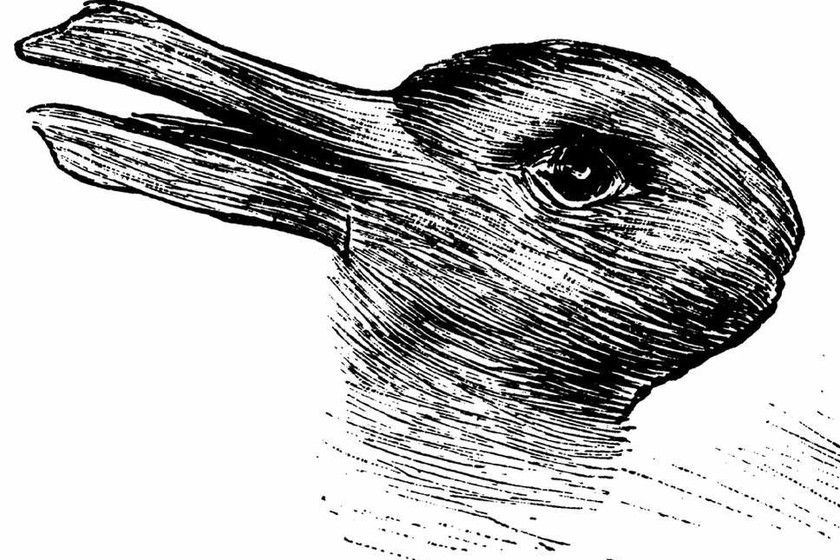
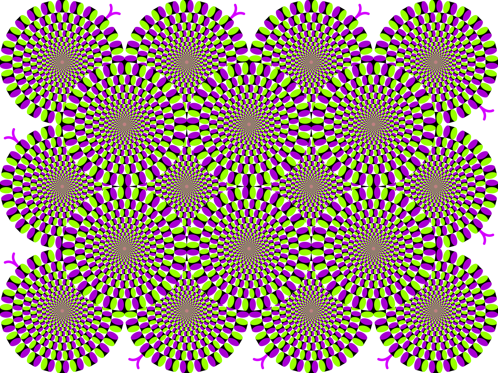
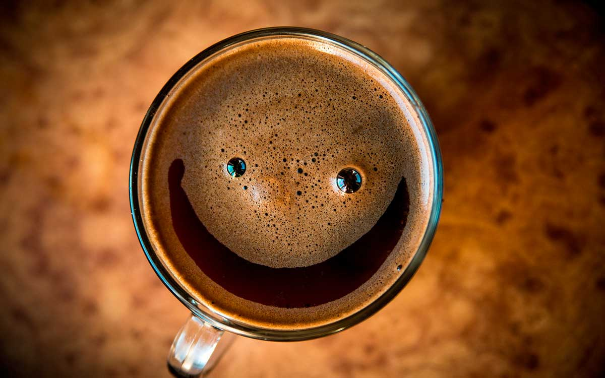
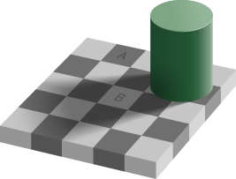

Visualización de datos · UTDT
Tu cerebro no te cuenta toda la verdad
Seguí bajando
Bajá
Módulo I
Percepción
No ves lo que creés que ves.
Primera prueba
Mirá la imagen.
¿Qué ves?
Lo primero que aparezca. Sin pensarlo.

Más gente ve pato que conejo
Qué vio la gente al mirar la figura por primera vez · seguí bajando: las barras crecen con tu scroll
Casi 6 de cada 10 ven pato; el resto, conejo.
La imagen es siempre la misma. Lo que cambia es el cerebro que la mira.
La pista
Dale vuelta la cabeza.
Seguí bajando: la figura gira y aparece el otro animal.
7 de cada 10 personas cambian lo que ven cuando aparece el contexto.
El dato nuevo no estaba en la imagen: lo puso el contexto.

No todas las ilusiones
son ambiguas.
Mirá el centro un segundo. Seguí bajando.
Esta imagen está completamente quieta.
Ni un solo píxel se mueve. Y, sin embargo, gira.
Fuente: Kitaoka (2003), “Rotating Snakes”.
Pero no sos el único
96 de cada 100 ven movimiento donde no lo hay.
No es un error tuyo: tu cerebro agrega un movimiento que no existe en la imagen.
Segunda prueba
No es solo la vista.
También el oído.
Dale play, escuchá una vez y elegí en el acto: ¿qué palabra oíste?
Es el mismo audio para todos. Pero 67% oye “bicicleta” y 33% “alquiler”.
Lo que oís no depende del sonido: depende de lo que tu cerebro esperaba oír.
Y si te muestro una palabra antes, el mismo audio cambia.
Con esa pista, 85% oye justo esa palabra; sin pista, apenas 15%. El mismo truco del contexto —ahora en tus oídos.
Una prueba más
Contá los pases del equipo de blanco.
Mirá el video con atención. Arranca solo.
Para cerrar
No ves lo que
no estás mirando.
Mirá el número de al lado mientras bajás. Esa es la mitad que no registró un gorila cruzando la pantalla por estar contando pases.
Tu atención es un reflector: ilumina una porción mínima del mundo y deja el resto a oscuras.
El mismo cerebro que recorta lo que ves es el que, en un rato, va a recortar qué te conviene.
Módulo II
Decisión
Lo que viste lo construyó tu cerebro. ¿Pasa lo mismo con lo que elegís?
Un bate y una pelota cuestan $1,10 en total.
El bate cuesta $1 más que la pelota.
¿Cuánto cuesta la pelota?
Tercera prueba
Respondé sin pensarlo.
Rápido, sin lápiz ni papel. Mirá el problema de al lado y elegí lo primero que te salga:
Si pensaste $0,10, te pasó lo mismo que a la mayoría. Está mal: la pelota cuesta $0,05.
Es que tu cabeza tiene dos motores: uno rápido y automático (el Sistema 1) y otro lento y analítico (el Sistema 2). Como pensar gasta energía, contestó el rápido… y el lento ni se molestó en revisar.
Una moneda al aire
Sale cara (50%) → ganás +$50
Sale ceca (50%) → perdés −$50
¿Aceptás jugar?
Cuarta prueba
Una apuesta justa.
Tiramos una moneda. Misma chance de ganar $50 que de perderlos. Decidí:
Casi nadie acepta —y vos probablemente tampoco. La apuesta es justa, pero no se siente justa.
Mirá el gráfico: ganar y perder los mismos $50 no pesan igual en tu cabeza.
Perder $50 duele casi el doble de lo que alegra ganarlos.
Se llama aversión a las pérdidas: el sistema rápido que se asusta ante una pérdida (la amígdala, el miedo) le gana al que celebra una ganancia. Por eso una apuesta 50 y 50 se siente como un mal negocio.
Sos quien decide
Una enfermedad amenaza a
600 personas.
Se salvan 200 personas, seguro.
Una moneda: 1 de cada 3 veces se salvan las 600; las otras 2 de 3, no se salva nadie.
Quinta prueba
Tu tarea: elegir un plan.
Leé los dos planes de al lado y elegí el que te parezca mejor:
Acá está el truco
A la mitad de la gente le conté esos mismos planes hablando de vidas salvadas. A la otra mitad, de muertes.
Mismos planes, mismos números. Lo único distinto fue la palabra.
Y la palabra dio vuelta la decisión: contado en vidas, el 72% eligió el plan seguro; contado en muertes, solo el 22%.
¿Por qué? Por lo que ya viste con la moneda: perder pesa más. Dicho en muertes, el plan seguro suena a una pérdida fija —400 muertos— y, con tal de esquivarla, la gente se anima a arriesgar. La misma aversión a las pérdidas, ahora decidiendo vidas.
Para cerrar el módulo
¿Y cuánto te das cuenta
de lo que no sabés?
Te hicimos decidir un precio, una apuesta y un plan. Falta una pregunta: ¿qué tan bien medís tu propia cabeza? En un test, a la gente se le comparó lo que cree que sabe con lo que realmente sabe.
Mirá la línea naranja: casi no se mueve. Todos se creen parecido de buenos, sepan mucho o poco.
Por eso los peores (a la izquierda) se creen muchísimo mejores de lo que son: no les alcanza la habilidad ni para darse cuenta de lo que les falta.
Y los mejores (a la derecha) se subestiman.
La seguridad no acompaña a la habilidad. Esa confianza de más es, justo, la palanca que en el próximo módulo alguien va a aprovechar.
Módulo III
Sesgos
Creer es rellenar lo ambiguo —y otros lo saben, y lo usan.
Antes de empezar
¿Qué es un sesgo?
No es un error al azar. Es una desviación sistemática: tu juicio apunta torcido y casi siempre para el mismo lado.
Por eso son predecibles.
Si todos fallan igual, el error se puede anticipar —y aprovechar. De eso se trata este último módulo.
El 93% se cree mejor
que el promedio al volante.
Es matemáticamente imposible: por definición, solo la mitad puede estar por encima de la media.
No es soberbia: es una ilusión.
El mismo cerebro que vio moverse una imagen quieta se ve a sí mismo mejor de lo que es.
Leé esto con atención.
Es una descripción de tu personalidad. ¿Te sentís identificado?
Es normal: este texto se lo mostramos a todos.
En 1948, Bertram Forer le dio la misma descripción genérica a sus alumnos y la calificaron, en promedio, 4,26 sobre 5 de precisión. Es el truco del horóscopo, del tarot y del psíquico.
Cada frase explota un sesgo distinto.
Tu cerebro completó un texto vago con tu propia vida, igual que le agregó movimiento a una imagen que estaba quieta. La creencia y la ilusión funcionan con el mismo mecanismo: rellenar lo ambiguo.
Caras y fantasmas
El cerebro que ve fantasmas.
Somos tan buenos detectando patrones que los vemos donde no hay: una cara en un enchufe, una presencia en una habitación vacía.
Seguí bajando — esto se mueve de costado →

El mismo cerebro que vio moverse a las víboras quietas encuentra fantasmas en el ruido. Cada experiencia “paranormal” tiene explicación: pareidolia, infrasonido, alucinación hipnagógica. Pasá el cursor por las barras.
Más seguros que
los que saben.
Aunque nos equivoquemos, sentimos que tenemos razón —incluso frente a miles de científicos que estudiaron el tema toda su vida.
Y hay industrias que lo saben.
“La duda es nuestro producto”, escribió una tabacalera en 1969. Hoy las mismas técnicas se usan para negar el cambio climático.
Es la ilusión más cara de todas.
Creer que tu percepción del mundo le gana al método que se inventó, justamente, para corregir las ilusiones del cerebro.

Una última ilusión · el tablero de Adelson
No podés apagar la ilusión.
El cuadrado “oscuro” a plena luz y el cuadrado “claro” dentro de la sombra son exactamente el mismo gris. Tu cerebro, en cambio, te muestra dos.
¿Por qué? Ve que ese cuadrado cae bajo la sombra del cilindro y la descuenta: “si está en sombra y aun así se ve así, en realidad tiene que ser más claro”. Corrige la sombra solo, automáticamente. Y no lo podés desactivar —ni ahora que sabés que son el mismo color.
Tu cerebro no te miente para hacerte mal.
Te miente porque construir una versión útil de la realidad es lo único que sabe hacer. Lo hace cuando mirás, cuando elegís y cuando creés.
La única diferencia entre caer en la trampa y verla venir no es ser más inteligente.
Es saber que la trampa existe.
Ahora lo sabés.